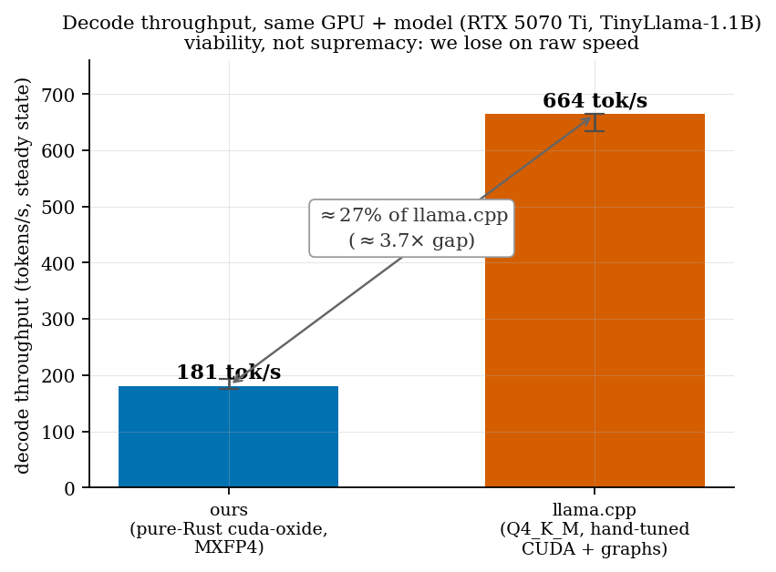
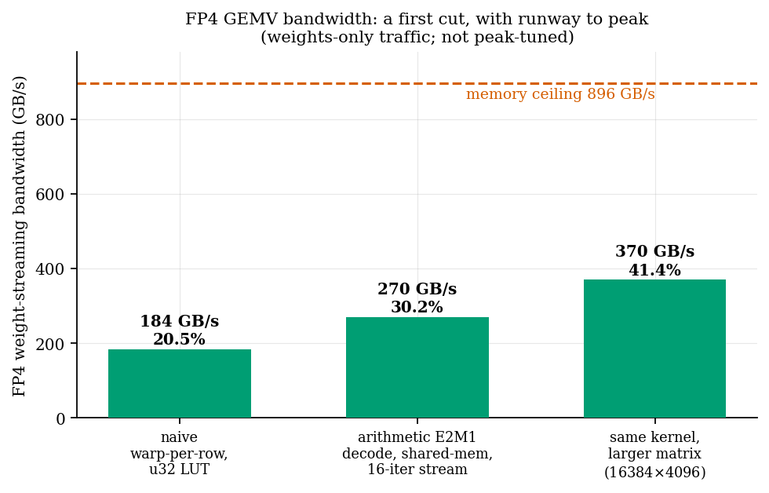

— with NVIDIA's own compiler
llama.cpp's
decode throughput on a first, unoptimized cut. Viability, not supremacy.
We report a viability result: an entire Llama-class decoder, written in pure Rust and compiled to
PTX by NVIDIA's own experimental first-party Rust→PTX backend (cuda-oxide), runs FP4-quantized
weights on a consumer NVIDIA RTX 5070 Ti and generates coherent English text. On a real
TinyLlama-1.1B model quantized to MXFP4, the engine sustains roughly 181 tokens/s of decode
throughput at steady state (median over a clean-GPU re-measurement; 188.6 tok/s in the original
session, which the clean run reproduced) — within about 3.7×, or roughly 27%, of
llama.cpp's decode throughput (≈664 tok/s, Q4_K_M, hand-tuned CUDA with CUDA graphs)
on the same GPU, on a first, unoptimized cut. Along the way we measured the actual programmable
surface of consumer Blackwell (sm_120) for Rust kernels and found it richer than secondary sources
imply: TMA, thread-block clusters with distributed shared memory, and native FP4 block-scaled
tensor-core MMA all execute, while the tcgen05 5th-generation tensor-memory MMA pipeline correctly
does not. We do not claim supremacy; llama.cpp is faster today, and we say where and
why. The contribution is that the path exists end to end — a coherent LLM, compiled from Rust by
NVIDIA's compiler, on a gaming GPU — and that it lands close on the first attempt, with a clear
optimization runway.
llama.cpp decode throughput on a first, unoptimized cut. We lose on raw speed and say exactly where and why.
llama.cpp's
throughput, a ~3.7× gap — the honest first-cut result.
Archived on Zenodo: 10.5281/zenodo.21056347